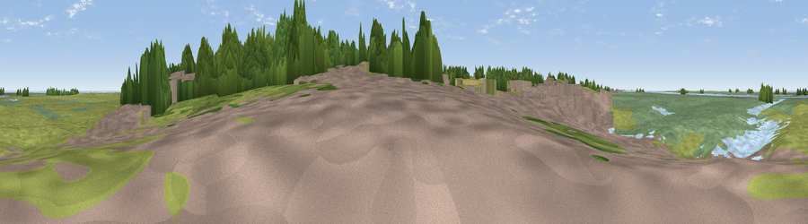

Viewpoint near Blakeney
#37962 in England · top 77% of its area beats it · near BlakeneyWhere it is
The exact computed spot (TG 02848 44087). Click the marker for map links.
The view, rendered

A 360° render of this exact spot computed from the terrain model, tree cover and land cover — summer colours, afternoon light, calibrated against photographs of famous viewpoints. Real trees, hedges and buildings will differ in detail.
The panorama
Grey silhouette: terrain skyline in each direction (720 bearings, Earth curvature and refraction included). Dashed green: skyline with trees (+15 m) and buildings (+8 m) as obstacles. Blue strip: how far the ground is visible on each bearing.
Where the view opens
Wedge length = distance to the farthest visible ground on that bearing (vegetation-aware). Rings at 10, 25 and 50 km.
What fills the view
42% grassland · 33% wetland · 9% woodland · 7% built-up · 7% water · 2% cropland
Angular shares of the visible panorama (visual magnitude), not map area. Landscape diversity 0.61 (0–1 Shannon).
Key numbers
More beautiful places nearby
The staircase of upgrades: each row has a higher view potential than everything closer. Driving times are estimates from straight-line distance, calibrated against real road routing — check an actual route before setting out.
| Place | Direction | Drive | Score |
|---|---|---|---|
| Viewpoint near Salthouse | ESE · 3 km | ~8 min | 65.4 |
| Viewpoint near Weybourne | ESE · 8 km | ~15 min | 68.3 |
| Viewpoint near Claxby | WNW · 105 km | ~129 min | 71.5 |
| Broombriggs Hill | W · 154 km | ~176 min | 74.4 |
| Viewpoint near Woodhouse Eaves | W · 154 km | ~177 min | 77.7 |
| Viewpoint near Speeton | NNW · 157 km | ~180 min | 80.0 |
| Olivers Mount | NNW · 173 km | ~194 min | 80.3 |
| Viewpoint near Ravenscar | NNW · 188 km | ~207 min | 82.7 |
52.95579, 1.01837 · source: osm viewpoint · position refined by local search. Computed location — check access rights before visiting.